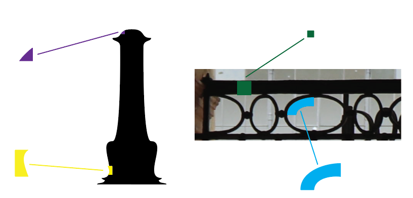
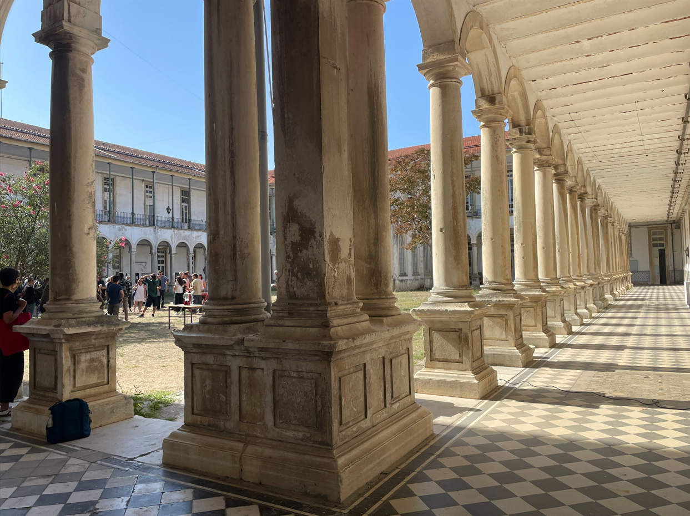

Modular Display Typeface
A modular display typeface designed as a tribute to the Colégio das Artes da Universidade de Coimbra. Every glyph is constructed from a finite set of repeating geometric modules, echoing the rhythm, arches and proportions of the building that inspired it.
College Gothic is built on a single principle: restriction breeds character. Rather than drawing each letter freely, the alphabet is assembled from a small library of modules, straight bars, quarter arches and joints, that snap onto a fixed grid.
This constraint forces a consistent voice across the whole character set, while leaving room for surprising letterforms to emerge when the modules combine in unexpected ways.

A preview of the uppercase set perfectly aligned onto the modular baseline grid structure.

The typeface takes its proportions from the Colégio das Artes in Coimbra: the cadence of its windows, the weight of its stone and the geometry of its facade became the seed for the module library.
Naming it College Gothic ties the project to the institution while giving the family its own identity as a standalone display face for posters, signage and editorial headlines.
Interactive generative poster layout running live via p5.js in full A4 proportion.